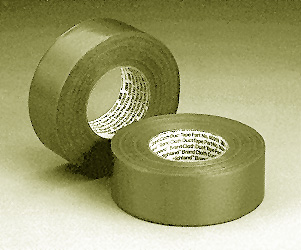

Do you have a private road that needs striping?
Are you looking for a way to keep your rowdy children in line?
Maybe you run a grocery store and want a quick and easy way to get people to your store, without costly advertising!
Try Yellow Number Five Freeway Stripes!
Available in one fine color, our freeway stripes come in two models for all your striping needs. To keep your kids in line, use our Economy stripes on your carpet and hardwood floors to control the flow of traffic from the bedroom to the dinner table and back! And for those small business owners out there, our Deluxe auto-striper can turn an ordinary city street into a one-way profit highway! Let the dollars roll in!

Our economy stripes. Each roll contains approximately 150 stripes (specific mileage may vary.)
These stripes are perfect for small jobs, jobs indoors and outdoors, anything where you need a small containment with a low cost and easy application. They are washable and removable, and come with a 90-day performance guarantee. One roll of economy stripes costs $15, plus $2 shipping and handling per order.
Not pictured here, the deluxe auto-striper allows you to quickly and easily perform major striping jobs, including, but not limited to, city streets, parks, any flat surface you need striped! Similar to the models used by the Department of Transportation here in the state of Oregon, this striper can perform its duties at cruising speeds of up to 30 mph. A driver's license may be required for use in your area. The cost for this striping wonder of the 21st century is a paltry $100,000! Comes with a full supply of striping paint (good for one major job), AM/FM stereo, a handy dashboard compass to help you stripe, and a free 1 hour striping instructional session. Will be hand-delivered to your door.
To order stripes, please send a check or money order for the cost of the stripes plus shipping and handling to:
Yellow Number Five
2102 N. Walnut #71
Ellensburg, WA 98926
Make checks out to the band's manager, Scott Vandehey, not Yellow Number Five. Please specify the kind of stripes you wish to buy. Allow 4-6 weeks for delivery.
<< back
|